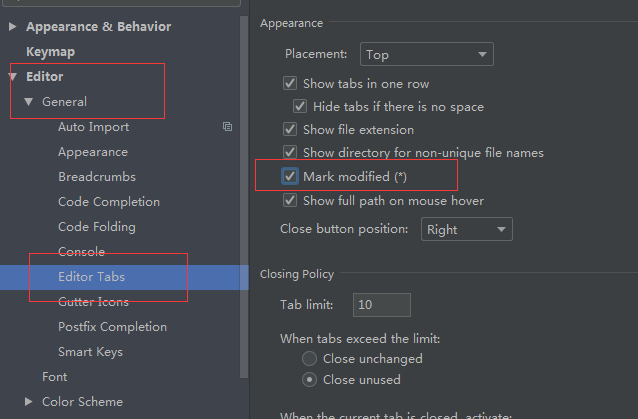
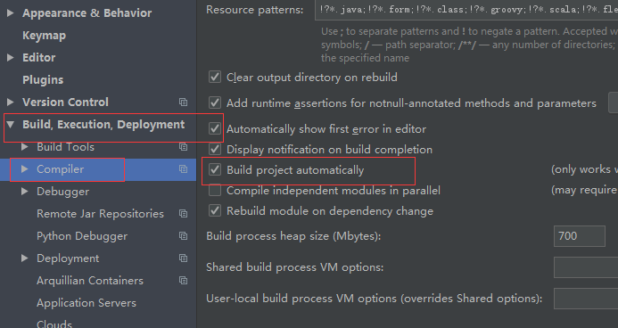
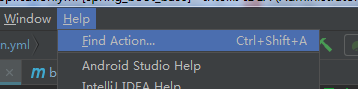
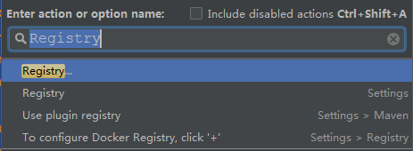
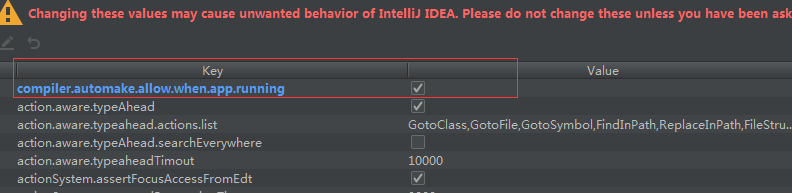
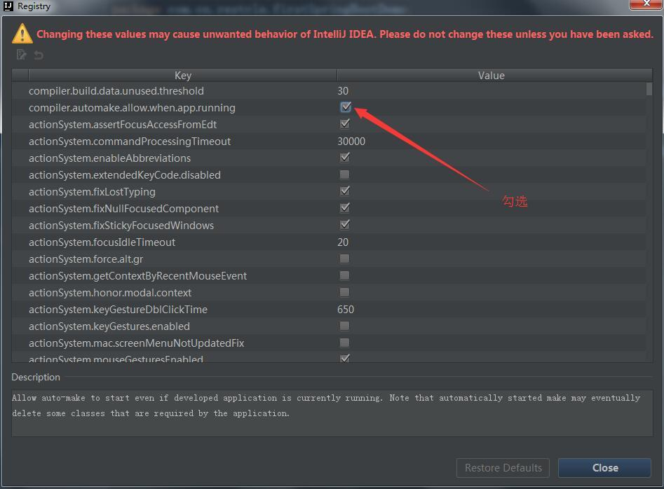
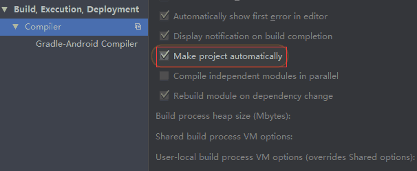
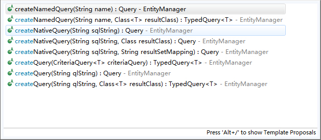

页面中包含一些外部页面地址，需要记录所有外部访问页面的次数，简单实现的思路为：
拦截所有带有jishu属性的超链，移除其 href 属性，先访问对应的计数页面，访问成功后在访问他原来自己的url；
实现代码如下：
1 |
|
要在当前页面同级目录下创建baidu.html,taobao.html等页面，然后统计这些页面的访问次数即可。
页面中包含一些外部页面地址，需要记录所有外部访问页面的次数，简单实现的思路为：
拦截所有带有jishu属性的超链，移除其 href 属性，先访问对应的计数页面，访问成功后在访问他原来自己的url；
实现代码如下：
1 |
|
要在当前页面同级目录下创建baidu.html,taobao.html等页面，然后统计这些页面的访问次数即可。
在pom.xml中添加如下代码：
1 | <dependency> |
添加之后，会默认启动Spring Security相关功能。
exclude排除1 | package com.springsecurity.demo; |
中间是通过角色（权限）来进行匹配，也就是当前用户所拥有的权限是否包含要访问资源所需要的角色。
WebSecurityConfig通过configure(AuthenticationManagerBuilder auth)注入UserDetailsServiceUserDetailsService通过UserDetails loadUserByUsername(String s)加载用户密码，角色等，并返回UserDetail对象UserDetail子类通过List<GrantedAuthority> getAuthorities()返回当前用户所拥有的权限集合MetadataSourceweb 子类FilterInvocationSecurityMetadataSource通过Collection<ConfigAttribute> getAttributes(Object o)方法返回访问某一个 url 所需要的权限集合AccessDecisionManager子类通过decide(Authentication auth, Object o, Collection<ConfigAttribute> cas)判断当前用户所拥有的权限是否包含访问当前url所需要的权限，如果不包含则抛出AccessDeniedException需要重载的方法如下：
1 |
|
需要重载的方法如下：
1 |
|
需要重载的方法如下：
1 |
|
SecurityMetadataSource它的主要责任就是当访问一个 url 时返回这个 url 所需要的访问权限。如果没有匹配的 url 直接返回 null，也就是没有配置权限的 url 默认都为白名单。
1 |
|
AccessDecisionManager有了权限资源，知道了当前访问的 url 需要的具体权限，接下来就是决策当前的访问是否能通过权限验证了。
1 |
|
decide方法的三个参数中：
Authentication auth包含了当前的用户信息，包括拥有的权限。这里的权限来源就是前面登录时UserDetailsService中设置的authorities。Object o就是FilterInvocation对象，可以得到request等 web 资源。Collection<ConfigAttribute> cas是本次访问需要的权限。上面的实现中，当需要多个权限时只要有一个符合则校验通过，即或的关系，想要并的关系只需要修改这里的逻辑即可。
1 | git config --global user.name "Your Name" |
1 | $ git init |
1 | git add filename |
1 | git commit -m "comment message" |
1 | git commit -am "skip index/stage" |
初始化一个 Git 仓库，使用 git init 命令。
添加文件到 Git 仓库，分两步：
git status命令看看结果1 | git status |
1 | git diff filename |
版本控制系统肯定有某个命令可以告诉我们历史记录，在 Git 中，我们用 git log 命令查看
1 | git log |
首先，Git 必须知道当前版本是哪个版本，在 Git 中，用 HEAD 表示当前版本，也就是最新的提交,上一个版本就是 HEAD^，上上一个版本就是 HEAD^^，当然往上 100 个版本写 100 个^比较容易数不过来，所以写成 HEAD~100.
1 | # 用上一个提交版本恢复到工作区 |
git reflog用来查看历史1 | git reflog |
git reset --hard commit_id。git log可以查看提交历史，以便确定要回退到哪个版本。git reflog查看命令历史，以便确定要回到未来的哪个版本。（Working Directory）：就是你在电脑里能看到的目录，比如我的 learngit 文件夹就是一个工作区。
（Repository）：工作区有一个隐藏目录“.git”，这个不算工作区，而是 Git 的版本库。
Git 的版本库里存了很多东西，其中最重要的就是称为 stage（或者叫 index）的暂存区，还有 Git 为我们自动创建的第一个分支 master，以及指向 master 的一个指针叫 HEAD。
前面讲了我们把文件往 Git 版本库里添加的时候，是分两步执行的：
第一步是用“git add”把文件添加进去，实际上就是把文件修改添加到暂存区；
第二步是用“git commit”提交更改，实际上就是把暂存区的所有内容提交到当前分支。
git checkout -- file可以丢弃工作区的修改如果暂存区有内容，则用暂存区的内容覆盖工作区，如果暂存区为空，则采用最后提交版本的内容覆盖工作区对应文件内容。
1 | git checkout -- filename |
git checkout -- file命令中的“–”很重要，没有“–”，就变成了“创建一个新分支”的命令.
用命令git reset HEAD file可以把暂存区的修改撤销掉（unstage）
1 | git reset HEAD filename |
git reset命令既可以回退版本，也可以把暂存区的修改回退到工作区。当我们用HEAD时，表示最新的版本。
场景 1：当你改乱了工作区某个文件的内容，想直接丢弃工作区的修改时，用命令git checkout -- file。
场景 2：当你不但改乱了工作区某个文件的内容，还添加到了暂存区时，想丢弃修改，分两步，第一步用命令git reset HEAD file，就回到了场景 1，第二步按场景 1 操作。
确实要从版本库中删除该文件，那就用命令git rm删掉，并且 commit
1 | git rm test.txt |
另一种情况是删错了，因为版本库里还有呢，所以可以很轻松地把误删的文件恢复到最新版本
1 | git checkout -- test.txt |
git checkout其实是用暂存区里的版本替换工作区的版本，无论工作区是修改还是删除，都可以“一键还原”。
命令git rm用于删除一个文件。如果一个文件已经被提交到版本库，那么你永远不用担心误删，但是要小心，你只能恢复文件到最新版本，你会丢失最近一次提交后你修改的内容。
要关联一个远程库，使用命令git remote add origin git@server-name:path/repo-name.git；
关联后，使用命令git push -u origin master建立当前分支和远程仓库 origin 的 master 分支关联，以后在当前分支上只要使用git pull或者git push即可实现当前分支和远程服务器对应分支的推送和拉取；
此后，每次本地提交后，只要有必要，就可以使用命令git push origin master推送最新修改；
用命令git clone克隆一个本地库
1 | # Git本身的源代码你既可以用 git:// 协议来访问： |
查看分支：git branch
创建分支：git branch name
切换分支：git checkout name
创建+切换分支：git checkout -b name
合并某分支到当前分支：git merge name
删除分支：git branch -d name
在 当前分支下，要把 dev 分支的内容合并
1 | git merge dev |
当 Git 无法自动合并分支时，就必须首先解决冲突。解决冲突后，再提交，合并完成。
用git log --graph命令可以看到分支合并图。
在实际开发中，我们应该按照几个基本原则进行分支管理：
首先，master 分支应该是非常稳定的，也就是仅用来发布新版本，平时不能在上面干活；
那在哪干活呢？干活都在 dev 分支上，也就是说，dev 分支是不稳定的，到某个时候，比如 1.0 版本发布时，再把 dev 分支合并到 master 上，在 master 分支发布 1.0 版本；
你和你的小伙伴们每个人都在 dev 分支上干活，每个人都有自己的分支，时不时地往 dev 分支上合并就可以了。
Git 还提供了一个 stash 功能，可以把当前工作现场“储藏”起来，等以后恢复现场后继续工作：
1 | git stash |
现在，用git status查看工作区，就是干净的（除非有没有被 Git 管理的文件），因此可以放心地创建分支来修复 bug。
首先确定要在哪个分支上修复 bug，假定需要在 master 分支上修复，就从 master 创建临时分支：
1 | # 转换到master分支 |
查看存储的工作 用 git stash list
1 | git stash list |
工作现场还在，Git 把 stash 内容存在某个地方了，但是需要恢复一下，有两个办法：
一是用git stash apply恢复，但是恢复后，stash 内容并不删除，你需要用git stash drop来删除；
另一种方式是用git stash pop，恢复的同时把 stash 内容也删了：
修复 bug 时，我们会通过创建新的 bug 分支进行修复，然后合并，最后删除；
当手头工作没有完成时，先把工作现场git stash一下，然后去修复 bug，修复后，再git stash pop，回到工作现场.
如果要丢弃一个没有被合并过的分支，可以通过git branch -D name强行删除。
当你从远程仓库克隆时，实际上 Git 自动把本地的 master 分支和远程的 master 分支对应起来了，并且，远程仓库的默认名称是 origin。
要查看远程库的信息，用git remote或者用 git remote -v 显示更详细的信息：
1 | git remote |
推送分支，就是把该分支上的所有本地提交推送到远程库。推送时，要指定本地分支，这样，Git 就会把该分支推送到远程库对应的远程分支上.
1 | git push origin master//如果要推送其他分支，比如dev，就改成git push origin dev |
但是，并不是一定要把本地分支往远程推送，那么，哪些分支需要推送，哪些不需要呢？
master 分支是主分支，因此要时刻与远程同步；
dev 分支是开发分支，团队所有成员都需要在上面工作，所以也需要与远程同步；
bug 分支只用于在本地修复 bug，就没必要推到远程了，除非老板要看看你每周到底修复了几个 bug；
feature 分支是否推到远程，取决于你是否和你的小伙伴合作在上面开发。
总之，就是在 Git 中，分支完全可以在本地自己藏着玩，是否推送，视你的心情而定！
多人协作时，大家都会往 master 和 dev 分支上推送各自的修改。
现在，模拟一个你的小伙伴，可以在另一台电脑（注意要把 SSH Key 添加到 GitHub）或者同一台电脑的另一个目录下克隆：
1 | git clone git://git.kernel.org/pub/scm/git/git.git |
指定本地 dev 分支与远程 origin/dev 分支的链接
1 | git branch --set-upstream dev origin/dev |
因此，多人协作的工作模式通常是这样：
首先，可以试图用git push origin branch-name推送自己的修改；
如果推送失败，则因为远程分支比你的本地更新，需要先用git pull试图合并；
如果合并有冲突，则解决冲突，并在本地提交；
没有冲突或者解决掉冲突后，再用git push origin branch-name推送就能成功！
如果git pull提示“no tracking information”，则说明本地分支和远程分支的链接关系没有创建，用命令git branch --set-upstream branch-name origin/branch-name。
这就是多人协作的工作模式，一旦熟悉了，就非常简单。
查看远程库信息，使用git remote -v；
本地新建的分支如果不推送到远程，对其他人就是不可见的；
从本地推送分支，使用git push origin branch-name，如果推送失败，先用git pull抓取远程的新提交；
在本地创建和远程分支对应的分支，使用git checkout -b branch-name origin/branch-name，本地和远程分支的名称最好一致；
建立本地分支和远程分支的关联，使用git branch --set-upstream branch-name origin/branch-name；
从远程抓取分支，使用git pull，如果有冲突，要先处理冲突。
命令git tag name就可以打一个新标签，可以用命令git tag查看所有标签
1 | # 新建标签 |
用git show tagname查看标签信息
1 | git show v1.0 |
命令git tag name用于新建一个标签，默认为 HEAD，也可以指定一个 commit id；
-a tagname -m “blablabla…”可以指定标签信息；
-s tagname -m “blablabla…”可以用 PGP 签名标签；
命令git tag可以查看所有标签；
推送某个标签到远程，使用命令 git push origin tagname，或者，一次性推送全部尚未推送到远程的本地标签
1 | git push origin v1.0git push origin --tags |
删除标签
分两步，1、删除本地；2、删除远程。
1 | //删除本地 |
命令git push origin tagname可以推送一个本地标签；
命令git push origin --tags可以推送全部未推送过的本地标签；
命令git tag -d tagname可以删除一个本地标签；
命令git push origin :refs/tags/tagname可以删除一个远程标签。
不需要从头写.gitignore文件，GitHub 已经为我们准备了各种配置文件，只需要组合一下就可以使用了。所有配置文件可以直接在线浏览：https://github.com/github/gitignore
忽略文件的原则是：
.class文件；如果敲git st就表示git status
1 | git config --global alias.st status |
1 | git config --global alias.unstage 'reset HEAD' |
ANT 通配符有三种：
| 通配符 | 说明 |
|---|---|
| ? | 匹配任何单字符 |
| * | 匹配 0 或者任意数量的字符 |
| ** | 匹配 0 或者更多的目录 |
例子：
| URL 路径 | 说明 |
|---|---|
| /app/*.x | 匹配(Matches)所有在 app 路径下的.x 文件 |
| /app/p?ttern | 匹配(Matches) /app/pattern 和 /app/pXttern,但是不包括/app/pttern |
| /**/example | 匹配(Matches) /app/example, /app/foo/example, 和 /example |
| /app/*/dir/file. | 匹配(Matches) /app/dir/file.jsp, /app/foo/dir/file.html,/app/foo/bar/dir/file.pdf, 和 /app/dir/file.java |
| /*/.jsp | 匹配(Matches)任何的.jsp 文件 |
属性：
最长匹配原则(has more characters)
说明，URL 请求/app/dir/file.jsp，现在存在两个路径匹配模式/*/.jsp 和/app/dir/.jsp，那么会根据模式/app/dir/.jsp 来匹配
1 | package com.tiekui.springmvc.handlers; |
测试视图代码：
1 | <a href="testAntMask1/aaaaa/aaa/aaaa/aaa">Test Ant Mask</a> |
1 | package com.weidian.decorate.dao.domain; |
1 | const tableName = 'order_info' |
p标签1 | var str = '<div>1<p>2<h1>3<span>4</span>5</h1>6</p>7</div>' |
1 | var str = 'Hello, Hi, I am Hilary.' |
1 | var str = 'Hello, Hi, I am Hilary.' |
[]内的字符不需要转义，如：[(.)]等[^\](one|two)正则(.*?)替换?:，如：#+ (\d+\.)+ (\w+(?:\/(\w+))?)\((.+?)\)match,matchAll,replace,split,search，正则对象方法：exec,testFile > setting 去掉下图勾选
File > Settings 勾选红框内选项

1 | <dependency> |

1 | spring |



SpringBoot 的 web 项目，在每一次修改了 java 文件或者是 resource 的时候，都必须去重启一下项目，这样的话浪费了很多的时间，实现了热部署，在每一次作了修改之后，都会自动的重启。
springboot 1.3 开始加入的。
1 | <dependency> |
project 中添加 spring-boot-maven-plugin,主要在eclipse中起作用，idea不需要加此配置,springboot 项目的话，应该是有此配置，加里面的内容即可。
1 | <build> |

然后记得 apply，ok。

注意：因为我的 idea 是 14 版本，有的 15 版本或者是更高的在 compiler 里面是这样的：

，然后快捷键是 Ctrl + Shift +A ,一样找到 complier.automake.allow.when.app.running，点击勾选即可。
按 F12（更多工具—->开发者工具），找到 network，勾选 Disable Cache。
本篇进行Spring-data-jpa的介绍，几乎涵盖该框架的所有方面，在日常的开发当中，基本上能满足所有需求。这里不讲解JPA和Spring-data-jpa单独使用，所有的内容都是在和Spring整合的环境中实现。如果需要了解该框架的入门，百度一下，很多入门的介绍。
大致整理一个提纲：
1、Spring-data-jpa的基本介绍；
2、和Spring整合；
3、基本的使用方式；
4、复杂查询，包括多表关联，分页，排序等；
JPA诞生的缘由是为了整合第三方ORM框架，建立一种标准的方式，百度百科说是JDK为了实现ORM的天下归一，目前也是在按照这个方向发展，但是还没能完全实现。在ORM框架中，Hibernate是一支很大的部队，使用很广泛，也很方便，能力也很强，同时Hibernate也是和JPA整合的比较良好，我们可以认为JPA是标准，事实上也是，JPA几乎都是接口，实现都是Hibernate在做，宏观上面看，在JPA的统一之下Hibernate很良好的运行。
上面阐述了JPA和Hibernate的关系，那么Spring-data-jpa又是个什么东西呢？这地方需要稍微解释一下，我们做Java开发的都知道Spring的强大，到目前为止，企业级应用Spring几乎是无所不能，无所不在，已经是事实上的标准了，企业级应用不使用Spring的几乎没有，这样说没错吧。而Spring整合第三方框架的能力又很强，他要做的不仅仅是个最早的IOC容器这么简单一回事，现在Spring涉及的方面太广，主要是体现在和第三方工具的整合上。而在与第三方整合这方面，Spring做了持久化这一块的工作，我个人的感觉是Spring希望把持久化这块内容也拿下。于是就有了Spring-data-**这一系列包。包括，Spring-data-jpa,Spring-data-template,Spring-data-mongodb,Spring-data-redis，还有个民间产品，mybatis-spring，和前面类似，这是和mybatis整合的第三方包，这些都是干的持久化工具干的事儿。
这里介绍Spring-data-jpa，表示与jpa的整合。
我们都知道，在使用持久化工具的时候，一般都有一个对象来操作数据库，在原生的Hibernate中叫做Session，在JPA中叫做EntityManager，在MyBatis中叫做SqlSession，通过这个对象来操作数据库。我们一般按照三层结构来看的话，Service层做业务逻辑处理，Dao层和数据库打交道，在Dao中，就存在着上面的对象。那么ORM框架本身提供的功能有什么呢？答案是基本的CRUD，所有的基础CRUD框架都提供，我们使用起来感觉很方便，很给力，业务逻辑层面的处理ORM是没有提供的，如果使用原生的框架，业务逻辑代码我们一般会自定义，会自己去写SQL语句，然后执行。在这个时候，Spring-data-jpa的威力就体现出来了，ORM提供的能力他都提供，ORM框架没有提供的业务逻辑功能Spring-data-jpa也提供，全方位的解决用户的需求。使用Spring-data-jpa进行开发的过程中，常用的功能，我们几乎不需要写一条sql语句，至少在我看来，企业级应用基本上可以不用写任何一条sql，当然spring-data-jpa也提供自己写sql的方式，这个就看个人怎么选择，都可以。我觉得都行。
与Spring整合我们从spring配置文件开始，为了节省篇幅，这里我只写出配置文件的结构。
1 |
|
对上面的配置文件进行简单的解释，只对“实体管理器”和“dao”进行解释，其他的配置在任何地方都差不太多。
我们知道原生的jpa的配置信息是必须放在META-INF目录下面的，并且名字必须叫做persistence.xml，这个叫做persistence-unit，就叫做持久化单元，放在这下面我们感觉不方便，不好，于是Spring提供了org.springframework.orm.jpa.LocalContainerEntityManagerFactoryBean
这样一个类，可以让你的随心所欲的起这个配置文件的名字，也可以随心所欲的修改这个文件的位置，只需要在这里指向这个位置就行。然而更加方便的做法是，直接把配置信息就写在这里更好，于是就有了这实体管理器这个bean。使用<property name="packagesToScan" value="your entity package" />这个属性来加载我们的entity。
这里衍生一下，进行一下名词解释，我们知道dao这个层叫做Data Access Object，数据库访问对象，这是一个广泛的词语，在jpa当中，我们还有一个词语叫做Repository，这里我们一般就用Repository结尾来表示这个dao，比如UserDao，这里我们使用UserRepository，当然名字无所谓，随意取，你可以意会一下我的意思，感受一下这里的含义和区别，同理，在mybatis中我们一般也不叫dao，mybatis由于使用xml映射文件（当然也提供注解，但是官方文档上面表示在有些地方，比如多表的复杂查询方面，注解还是无解，只能xml），我们一般使用mapper结尾，比如我们也不叫UserDao，而叫UserMapper。
上面拓展了一下关于dao的解释，那么这里的这个配置信息是什么意思呢？首先base-package属性，代表你的Repository接口的位置，repository-impl-postfix属性代表接口的实现类的后缀结尾字符，比如我们的UserRepository，那么他的实现类就叫做UserRepositoryImpl，和我们平时的使用习惯完全一致，于此同时，spring-data-jpa的习惯是接口和实现类都需要放在同一个包里面（不知道有没有其他方式能分开放，这不是重点，放在一起也无所谓，影响不大），再次的，这里我们的UserRepositoryImpl这个类的定义的时候我们不需要去指定实现UserRepository接口，根据spring-data-jpa自动就能判断二者的关系。
比如：我们的UserRepository和UserRepositoryImpl这两个类就像下面这样来写。
1 | public interface UserRepository extends JpaRepository<User, Integer>{} |
那么这里为什么要这么做呢？原因是：spring-data-jpa提供基础的CRUD工作，同时也提供业务逻辑的功能（前面说了，这是该框架的威力所在），所以我们的Repository接口要做两项工作，继承spring-data-jpa提供的基础CRUD功能的接口，比如JpaRepository接口，同时自己还需要在UserRepository这个接口中定义自己的方法，那么导致的结局就是UserRepository这个接口中有很多的方法，那么如果我们的UserRepositoryImpl实现了UserRepository接口，导致的后果就是我们势必需要重写里面的所有方法，这是Java语法的规定，如此一来，悲剧就产生了，UserRepositoryImpl里面我们有很多的@Override方法，这显然是不行的，结论就是，这里我们不用去写implements部分。
spring-data-jpa实现了上面的能力，那他是怎么实现的呢？这里我们通过源代码的方式来呈现他的来龙去脉，这个过程中cglib发挥了杰出的作用。
在spring-data-jpa内部，有一个类，叫做
1 | public class SimpleJpaRepository<T, ID extends Serializable> implements JpaRepository<T, ID>,JpaSpecificationExecutor<T> |
我们可以看到这个类是实现了JpaRepository接口的，事实上如果我们按照上面的配置，在同一个包下面有UserRepository，但是没有UserRepositoryImpl这个类的话，在运行时期UserRepository这个接口的实现就是上面的SimpleJpaRepository这个接口。而如果有UserRepositoryImpl这个文件的话，那么UserRepository的实现类就是UserRepositoryImpl，而UserRepositoryImpl这个类又是SimpleJpaRepository的子类，如此一来就很好的解决了上面的这个不用写implements的问题。我们通过阅读这个类的源代码可以发现，里面包装了entityManager，底层的调用关系还是entityManager在进行CRUD。
下面我们通过一个完整的项目来基本使用spring-data-jpa，然后我们在介绍他的高级用法。

1 |
|
1 | public interface UserRepository extends JpaRepository<User, Integer>{} |
通过上面3步，所有的工作就做完了，User的基础CRUD都能做了，简约而不简单。
1 | public class UserRepositoryTest { |
测试通过。
说到这里，和spring已经完成。接下来第三点，基本使用。
前面把基础的东西说清楚了，接下来就是spring-data-jpa的正餐了，真正威力的地方。
我们的系统中一般都会有用户登录这个接口，在不使用spring-data-jpa的时候我们怎么做，首先在service层定义一个登录方法。如：
1 | User login(String name, String password); |
然后在serviceImpl中写该方法的实现，大致这样：
1 |
|
接下来，UserDao大概是这么个样子：
1 | User getUserByNameAndPassword(String name, String password); |
然后在UserDaoImpl中大概是这么个样子：
1 | public User getUserByNameAndPassword(String name, String password) { |
ok，这个代码运行良好，那么这样子大概有十来行代码，我们感觉这个功能实现了，很不错。然而这样子真正简捷么？如果这样子就满足了，那么spring-data-jpa就没有必要存在了，前面提到spring-data-jpa能够帮助你完成业务逻辑代码的处理，那他是怎么处理的呢？这里我们根本不需要UserDaoImpl这个类，只需要在UserRepository接口中定义一个方法
1 | User findByNameAndPassword(String name, String password); |
然后在service中调用这个方法就完事了，所有的逻辑只需要这么一行代码，一个没有实现的接口方法。通过debug信息，我们看到输出的sql语句是
1 | select * from user where name = ? and password = ? |
跟上面的传统方式一模一样的结果。这简单到令人发指的程度，那么这一能力是如何实现的呢？原理是：spring-data-jpa会根据方法的名字来自动生成sql语句，我们只需要按照方法定义的规则即可，上面的方法findByNameAndPassword，spring-data-jpa规定，方法都以findBy开头，sql的where部分就是NameAndPassword，被spring-data-jpa翻译之后就编程了下面这种形态：
1 | where name = ? and password = ? |
在举个例，如果是其他的操作符呢，比如like，前端模糊查询很多都是以like的方式来查询。比如根据名字查询用户，sql就是
1 | select * from user where name like = ? |
这里spring-data-jpa规定，在属性后面接关键字，比如根据名字查询用户就成了
1 | User findByNameLike(String name); |
被翻译之后的sql就是
1 | select * from user where name like = ? |
这也是简单到令人发指，spring-data-jpa所有的语法规定如下图：
通过上面，基本CRUD和基本的业务逻辑操作都得到了解决，我们要做的工作少到仅仅需要在UserRepository接口中定义几个方法，其他所有的工作都由spring-data-jpa来完成。
就是比较复杂的操作了，比如动态查询，分页，下面详细介绍spring-data-jpa的第二大杀手锏，强大的动态查询能力。
在上面的介绍中，对于我们传统的企业级应用的基本操作已经能够基本上全部实现，企业级应用一般都会有一个模糊查询的功能，并且是多条的查询，在有查询条件的时候我们需要在where后面接上一个 xxx = yyy 或者 xxx like '% + yyy + %'类似这样的sql。那么我们传统的JDBC的做法是使用很多的if语句根据传过来的查询条件来拼sql，mybatis的做法也类似，由于mybatis有强大的动态xml文件的标签，在处理这种问题的时候显得非常的好，但是二者的原理都一致，那spring-data-jpa的原理也同样很类似，这个道理也就说明了解决多表关联动态查询根儿上也就是这么回事。
那么spring-data-jpa的做法是怎么的呢？有两种方式。可以选择其中一种，也可以结合使用，在一般的查询中使用其中一种就够了，就是第二种，但是有一类查询比较棘手，比如报表相关的，报表查询由于涉及的表很多，这些表不一定就是两两之间有关系，比如字典表，就很独立，在这种情况之下，使用拼接sql的方式要容易一些。下面分别介绍这两种方式。
和Hibernate的HQL很类似。
前面说道了在UserRepository接口的同一个包下面建立一个普通类UserRepositoryImpl来表示该类的实现类，同时前面也介绍了完全不需要这个类的存在，但是如果使用JPQL的方式就必须要有这个类。如下：
1 | public class StudentRepositoryImpl { |
通过上面的方法，我们查询并且封装了一个User对象的分页信息。代码能够良好的运行。这种做法也是我们传统的经典做法。那么spring-data-jpa还有另外一种更好的方式，那就是所谓的类型检查的方式，上面我们的sql是字符串，没有进行类型检查，而下面的方式就使用了类型检查的方式。这个道理在mybatis中也有体现，mybatis可以使用字符串sql的方式，也可以使用接口的方式，而mybatis的官方推荐使用接口方式，因为有类型检查，会更安全。
下面的接口我把注释删了，为了节省篇幅，注释也没什么用，看方法名字大概都能猜到是什么意思。
1 | public interface JpaSpecificationExecutor<T> { |
上面说了，使用这种方式我们压根儿就不需要UserRepositoryImpl这个类，说到这里，仿佛我们就发现了spring-data-jpa为什么把Repository和RepositoryImpl文件放在同一个包下面，因为我们的应用很可能根本就一个Impl文件都不存在，那么在那个包下面就只有一堆接口，即使把Repository和RepositoryImpl都放在同一个包下面，也不会造成这个包下面有正常情况下2倍那么多的文件，根本原因：只有接口而没有实现类。
上面我们的UserRepository类继承了JpaRepository和JpaSpecificationExecutor类，而我们的UserRepository这个对象都会注入到UserService里面，于是如果使用这种方式，我们的逻辑直接就写在service里面了，下面的代码：一个学生Student类，一个班级Clazz类，Student里面有一个对象Clazz，在数据库中是clazz_id，这是典型的多对一的关系。我们在配置好entity里面的关系之后。就可以在StudentServiceImpl类中做Student的模糊查询，典型的前端grid的模糊查询。代码是这样子的：
1 |
|
先解释下这里的意思，然后我们在结合框架的源码来深入分析。
这里我们是2个表关联查询，查询条件包括Student表和Clazz表，类似的2个以上的表方式差不多，但是正如上面所说，这种做法适合所有的表都是两两能够关联上的，涉及的表太多，或者是有一些字典表，那就使用sql拼接的方式，简单一些。
先简单解释一下代码的含义，然后结合框架源码来详细分析。两个Predicate对象，Predicate按照中文意思是判断，断言的意思，那么放在我们的sql中就是where后面的东西，比如
1 | name like '% + jay + %'; |
下面的PageRequest代表分页信息，PageRequest里面的Sort对象是排序信息。上面的代码事实上是在动态的组合最终的sql语句，这里使用了一个策略模式，或者callback，就是
1 | studentRepository.findAll(一个接口) |
studentRepository接口方法调用的参数是一个接口，而接口的实现类调用这个方法的时候，在内部，参数对象的实现类调用自己的toPredicate这个方法的实现内容，可以体会一下这里的思路，就是传一个接口，然后接口的实现自己来定义，这个思路在nettyJavaScript中体现的特别明显，特别是JavaScript的框架中大量的这种方式，JS框架很多的做法都是上来先闭包，和浏览器的命名空间分开，然后入口方法就是一个回调，比如ExtJS：
1 | Ext.onReady(function() { |
参数是一个function，其实在框架内部就调用了这个参数，于是这个方法执行了。这种模式还有一个JDK的排序集合上面也有体现，我们的netty框架也采用这种方式来实现异步IO的能力。
接下来结合框架源码来详细介绍这种机制，以及这种机制提供给我们的好处。
这里首先从JPA的动态查询开始说起，在JPA提供的API中，动态查询大概有这么一些方法，
从名字大概可以看出这些方法的意义，跟Hibernate或者一些其他的工具也都差不多，这里我们介绍参数为CriteriaQuery类型的这个方法，如果我们熟悉多种ORM框架的话，不难发现都有一个Criteria类似的东西，中文意思是“条件”的意思，这就是各个框架构建动态查询的主体，Hibernate甚至有两种，在线和离线两种Criteria，mybatis也能从Example中创建Criteria，并且添加查询条件。
那么第一步就需要构建出这个参数CriteriaQuery类型的参数，这里使用建造者模式，
1 | CriteriaBuilder builder = em.getCriteriaBuilder(); |
接下来：
1 | Root<Student> root = query.from(Student.class); |
在这里，我们看方法名from，意思是获取Student的Root，其实也就是个Student的包装对象，就代表这条sql语句里面的主体。接下来：
1 | Predicate p1 = builder.like(root.<String> get("name"), "%" + student.getName() + "%"); |
Predicate是判断的意思，放在sql语句中就是where后面 xxx = yyy, xxx like yyy这种，也就是查询条件，这里构造了2个查询条件，分别是根据student的name属性进行like查询和根据student的password进行“=”查询，在sql中就是name like = ? and password = ?这种形式，接下来就是query.where(p1, p2)了。
这样子一个完整的动态查询就构建完成了，接下来调用getSingleResult或者getResultList返回结果，这里jpa的单个查询如果为空的话会报异常，这点感觉框架设计的不好，如果查询为空直接返回一个null或者一个空的List更好一点。
这是jpa原生的动态查询方式，过程大致就是，创建builder => 创建Query => 构造条件 => 查询。这么4个步骤，这里代码运行良好，如果不使用spring-data-jpa，我们就需要这么来做，但是spring-data-jpa帮我们做得更为彻底，从上面的4个步骤中，我们发现：所有的查询除了第三步不一样，其他几步都是一模一样的，不使用spring-data-jpa的情况下，我们要么4步骤写完，要么自己写个工具类，封装一下，这里spring-data-jpa就是帮我们完成的这样一个动作，那就是在JpaSpecificationPage<T> findAll(Specification<T> spec, Pageable pageable);这个方法，前面说了，这是个策略模式，参数spec是个接口，前面也说了框架内部对于这个接口有默认的实现类
1 |
|
，我们的Repository接口就是继承这个接口，而通过cglib的RepositoryImpl的代理类也是这个类的子类，默认也就实现了该方法。这个方法的方法体是这样的：
1 | /* |
这里的getQuery(spec, (Sort) null)返回类型是TypedQuery<T>进入这个getQuery方法：
1 | /** |
一切玄机尽收眼底，这个方法的内容和我们前面使用原生jpa的api的过程是一样的，而再进入Root<T> root = applySpecificationToCriteria(spec, query);
这个方法：
1 | /** |
我们可以发现spec参数调用了toPredicate方法，也就是我们前面service里面匿名内部类的实现。
到这里spring-data-jpa的默认实现已经完全明了。总结一下使用动态查询：前面说的原生api需要4步，而使用spring-data-jpa只需要一步，那就是重写匿名内部类的toPredicate方法。在重复一下上面的Student和Clazz的查询代码，
1 |
|
到这里位置，spring-data-jpa的介绍基本上就完成了，涵盖了该框架使用的方方面面。接下来还有一块比较实用的东西，我们看到上面第15行位置的条件查询，这里使用了一个多级的get，这个是spring-data-jpa支持的，就是嵌套对象的属性，这种做法一般我们叫方法的级联调用，就是调用的时候返回自己本身，这个在处理xml的工具中比较常见，主要是为了代码的美观作用，没什么其他的用途。
最后还有一个小问题，我们上面说了使用动态查询和JPQL两种方式都可以，在我们使用JPQL的时候，他的语法和常规的sql有点不太一样，以Student、Clazz关系为例，比如：
1 | select * from student t left join clazz tt on t.clazz_id = tt.id |
这是一个很常规的sql，但是JPQL是这么写：
1 | select t from Student t left join t.clazz tt |
left join右边直接就是t的属性，并且也没有了on t.clazz_id == tt.id，然而并不会出现笛卡尔积，这里解释一下为什么没有这个条件，在我们的实体中配置了属性的映射关系，并且ORM框架的最核心的目的就是要让我们以面向对象的方式来操作数据库，显然我们在使用这些框架的时候就不需要关心数据库了，只需要关系对象，而t.clazz_id = tt.id这个是数据库的字段，由于配置了字段映射，框架内部自己就会去处理，所以不需要on t.clazz_id = tt.id就是合理的。
前面介绍了spring-data-jpa的使用，还有一点忘了，悲观所和乐观锁问题，这里的乐观锁比较简单，jpa有提供注解@Version，加上该注解，自动实现乐观锁，byId修改的时候sql自动变成：update … set … where id = ? and version = ?，比较方便。
in操作的查询：
在日常手动写sql的时候有in这种查询是比较多的，比如select * from user t where t.id in (1, 2, 3)；有人说in的效率不高，要少用，但是其实只要in是主键，或者说是带有索引的，效率是很高的，mysql中如果in是子查询貌似不会走索引，不过我个人经验，在我遇到的实际应用中，in(ids)这种是比较多的，所以一般来说是没有性能问题的。
那么，sql里面比较好写，但是如果使用spring-data-jpa的动态查询方式呢，就和前面的稍微有点区别。大致上是这么一个思路：
1 | if(!CollectionUtils.isEmpty(ids)) { |
cb创建一个in的Predicate,然后给这个in赋值，最后把in加到where条件中。
手动配置锁：
spring-data-jpa支持注解方式的sql，比如：@Query(xxx)，另外，关于锁的问题，在实体中的某个字段配置@Version是乐观锁，有时候为了使用一个悲观锁，或者手动配置一个乐观锁（如果实体中没有version字段），那么可以使用@Lock这个注解，它能够被解析成为相关的锁。
一对多、多对多查询（查询条件在关联对象中时）：
1、在JPA中，一个实体中如果存在多个关联对象，那么不能同时eager获取，只能有一个是eager获取，其他只能lazy；在Hibernate当中有几种独有的解决方法，在JPA当中有2中方法，i.就是前面的改成延时加载；ii.把关联对象的List改成Set（List允许重复，在多层抓去的时候无法完成映射，Hibernate默认抓去4层，在第三层的时候如果是List就无法完成映射）。
2、在多对多的查询中，我们可以使用JPQL，也可以使用原生SQL，同时还可以使用动态查询，这里介绍多对多的动态查询，这里有一个条件比较苛刻，那就是查询参数是关联对象的属性，一对多类似，多对一可以利用上面介绍的级联获取属性的方式。这里介绍这种方式的目的是为了更好的利用以面向对象的方式进行动态查询。
举例：2张表，分别是Employee(id, name)和Company(id, name)，二者是多对多的关系，那么当查询Employee的时候，条件是更具公司名称。那么做法如下：
1 |
|
我们可以使用上面注释掉的方式，也可以使用下面这种比较简单的方式。因为我个人的习惯是尽量不去写DAO的实现类，除非查询特别复杂，万不得已的情况下采用，否则我个人比较偏向于这种方式。
上面的情况如果更为极端的话，关联多个对象，可以按照下面的方式：
1 |
|
1 | /** |
说明：虽然说JPA中这种方式查询会存在着多次级联查询的问题，对性能有所影响，但是在一般的企业级应用当中，为了开发的便捷，这种性能牺牲一般来说是可以接受的。
特别的：在一对多中或者多对一中，即便是fetch为eager，也会先查询主对象，再查询关联对象，但是在eager的情况下虽然是有多次查询问题，但是没有n+1问题，关联对象不会像n+1那样多查询n次，而仅仅是把关联对象一次性查询出来，因此，在企业级应用当中，访问量不大的情况下一般来说没什么问题。
补充一段题外话，关于Hibernate/JPA/Spring-Data-Jpa与MyBatis的区别联系，这种话题很多讨论，对于Hibernate/JPA/Spring-Data-Jpa，我个人而言基本上能够熟练使用，谈不上精通，对于mybatis，由于深入阅读过几次它的源码，对mybatis的设计思想以及细化到具体的方法，属性，参数算是比较熟悉，也开发过一些mybatis的相关插件。对于这两个持久化框架，总体来说的区别是，Hibernate系列的门槛相对较高，配置比较多，相对来说难度要大一些，主要体现在各种关系的问题上，据我所知，很多人的理解其实并不深刻，很多时候甚至配置得有一定的问题，但是优势也很明显，SQL自动生成，改数据库表结构仅仅需要调整几个注解就行了，在熟练使用的基础上相对来说要便捷一点。对于mybatis来说，门槛很低，真的很低，低到分分钟就能入门的程度，我个人最喜欢也是mybatis最吸引人的地方就是灵活，特别的灵活，但是修改数据库表结构之后需要调整的地方比较多，但是利用目前比较优秀的插件，对于单表操作也基本上能够达到和Hibernate差不多的境界（会稍微牺牲一点点性能），多表的情况下就要麻烦一点。性能方面的比较，由于我没做过测试，不太好比较，不过应该mybatis要稍微高一些，毕竟他的查询SQL可控一些（当然Hibernate也支持原生sql，但是对结果集的处理不够友好）。
之后更新：Root对象还有一批fetch方法，这个目前我很少用，后面有时间再来更新。
补充：单表分页可以传入分页对象，比如findByName(String name, new pageRequest(0, 10));